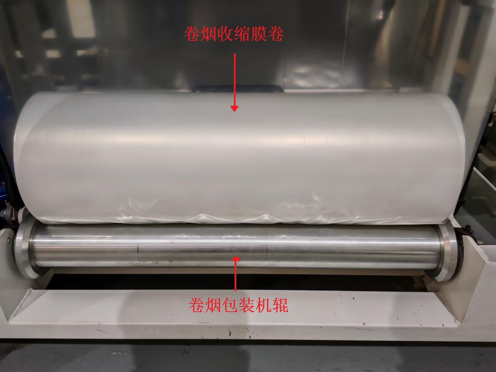
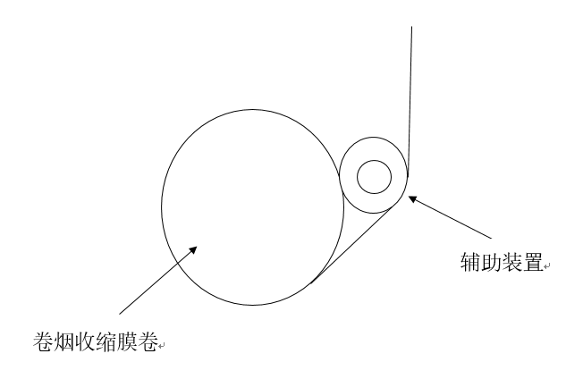
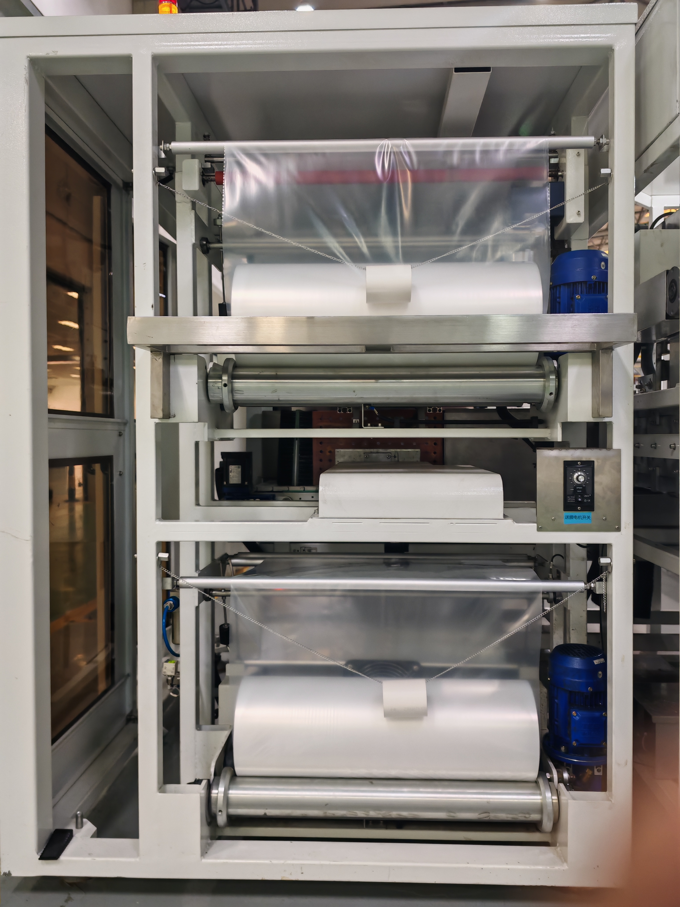

存在问题
包装膜在包装机上使用时因摩擦生电，易电荷分布不均导致其反向卷曲（静电反卷），卡入设备缝隙造成进料异常，导致断膜，影响生产效率。

原因诊断
- 包装膜与包装机辊之间发生大量的摩擦，并在表面积聚不同电性的静电荷。
- 静电荷在薄膜表面分布不均，导致薄膜一侧的吸引力大于另一侧，从而引起薄膜的扭曲或卷曲。
设定目标
【改善前】
选取10个工作日进行统计，14台卷烟包装机因卷烟收缩膜"静电反卷"发生故障次数与停机恢复耗时结果：
| 日期 | 故障次数 | 每次恢复耗时(分钟/次) |
|---|---|---|
| 2024.8.19 | 30 | 5.4 |
| 2024.8.20 | 26 | 5.8 |
| 2024.8.21 | 25 | 5.5 |
| 2024.8.22 | 28 | 5.2 |
| 2024.8.23 | 21 | 5.5 |
| 2024.8.24 | 25 | 6.3 |
| 2024.8.26 | 27 | 5.8 |
| 2024.8.27 | 26 | 5.6 |
| 2024.8.28 | 20 | 5.2 |
| 2024.8.29 | 23 | 5.4 |
平均故障次数
25.1
次/天
平均恢复时间
5.5
分钟/次
总停机时间
138.5
分钟/天

【改善后】
通过辅助装置增加了膜卷与进料薄膜间的距离，降低发生吸附的可能性，在避免设备改动的前提下，减少静电反卷现象。


改进措施
- 使用成本低廉的材料，制作并在卷烟包装机上加装一个辅助装置。
- 通过物理手段增大卷烟收缩膜卷与进料薄膜之间的距离，从而最大限度地减少卷烟包装膜因静电作用而产生的吸附情况。
成果效益
- 解决反卷现象：通过减少了送料片膜与卷烟包装膜之间的直接接触面积和频率，有效杜绝了因静电积聚而引发的卷烟收缩膜反卷问题，确保了卷烟包装机在作业过程中送料的连续性和稳定性。
- 装置成本低廉：确保了装置制作材料简单易得，可在装置出现损坏时及时快速地完成更新。
- 实现随装随用：装置的设计充分考虑到了与卷烟包装机原有结构的兼容性，无需对包装机进行任何破坏性改动即可安装到位，提高了辅助装置的灵活性和可维护性，并减少了应用成本。